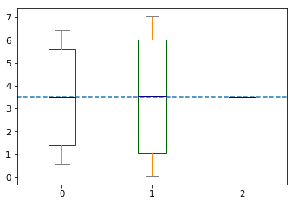
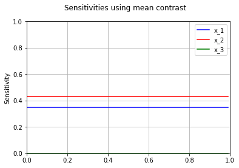
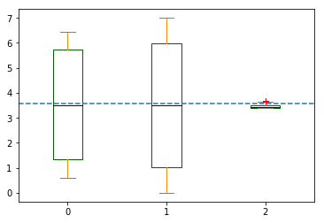
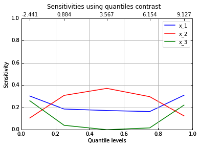
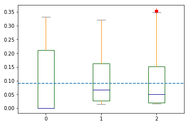
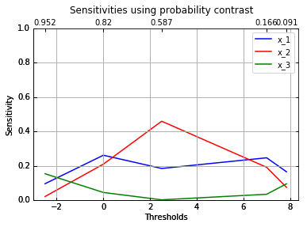

Example of using pygosa¶
We illustrate hereafter the use of the pygosa module.
In [1]:
import openturns as ot
import numpy as np
import pygosa
%pylab inline
Populating the interactive namespace from numpy and matplotlib
We define Sobol use-case, which is very common in case of
sensitivity analysis:
In [2]:
model = ot.SymbolicFunction(["x1","x2","x3"], ["sin(x1) + 7*sin(x2)^2 + 0.1*(x3^4)*sin(x1)"])
dist = ot.ComposedDistribution( 3 * [ot.Uniform(-np.pi, np.pi)] )
Design of experiment¶
We define the experiment design:
In [3]:
mcsp = pygosa.SensitivityDesign(dist=dist, model=model, size=1000)
The benefits of using a crude Monte-Carlo approach is the potential
use of several contrasts. In this demonstrate example, the used contrast
are :
Meancontrast to derive its sensitivitiesQuantilecontrast to derive sensitivities for some specific quantile levelsMeancontrast to derive sensitivities for some specific threshold values
Mean contrast & sensitivities¶
Hereafter we apply the mean contrast to the previous design in order
to get the sensitivities :
In [4]:
sam = pygosa.MeanSensitivities(mcsp)
factors_m = sam.compute_factors()
fig, ax = sam.boxplot()
/usr/lib/python2.7/dist-packages/matplotlib/figure.py:402: UserWarning: matplotlib is currently using a non-GUI backend, so cannot show the figure
"matplotlib is currently using a non-GUI backend, "

In [5]:
figure = pygosa.plot_mean_sensitivities(sam,set_labels=True)

Quantile sensitivities¶
Hereafter we apply the quantile contrast to the previous design in
order to get the sensitivities for quantile levels
:
In [6]:
saq = pygosa.QuantileSensitivities(mcsp)
factors_q = [saq.compute_factors(alpha=q) for q in [0.05, 0.25, 0.50, 0.75, 0.95]]
fig, ax = saq.boxplot()

In [7]:
figure = pygosa.plot_quantiles_sensitivities(saq,set_labels=True)

Probability sensitivities¶
Hereafter we apply the probability contrast to the previous design
in order to get the sensitivities for thresholds
:
In [8]:
sap = pygosa.ProbabilitySensitivities(mcsp)
factors_p = [sap.compute_factors(threshold=v) for v in [-2.5, 0, 2.5, 7.0, 7.85]]
fig, ax = sap.boxplot(threshold=7.85)

In [9]:
figure = pygosa.plot_probability_sensitivities(sap, set_labels=True)
